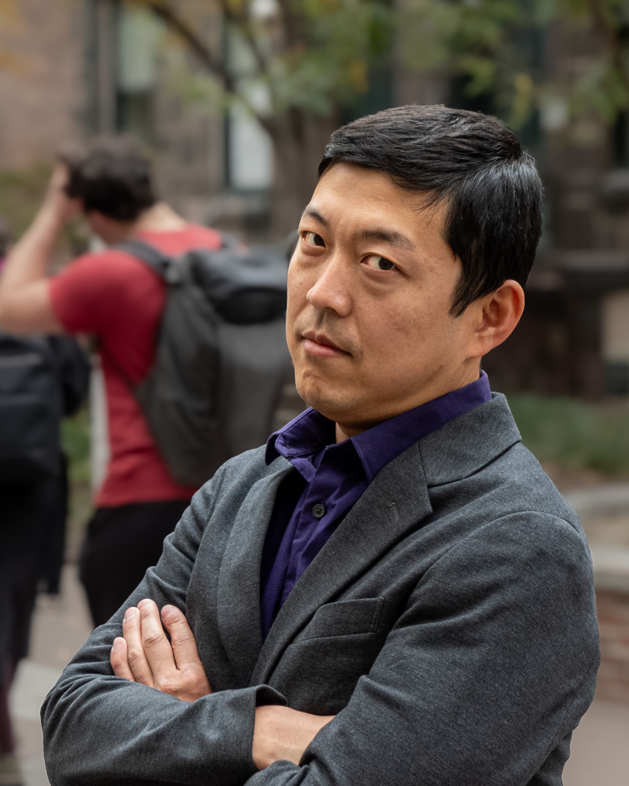

Hao Ye
Reproducibility Librarian
As the Reproducibility Librarian at the University of Florida, I provide training and consultations in open research, reproducible practices, and computational workflows. I am passionate about empowering individuals and teams to work openly. Working openly facilitates collaborations, makes the work better, and is a pathway towards disrupting inequitable power structures. In addition to teaching project and computational skills, I co-lead Alligator Ally Skills and teach workshops on how to use everyday actions to improve inclusion and accessibility.
Read More →
